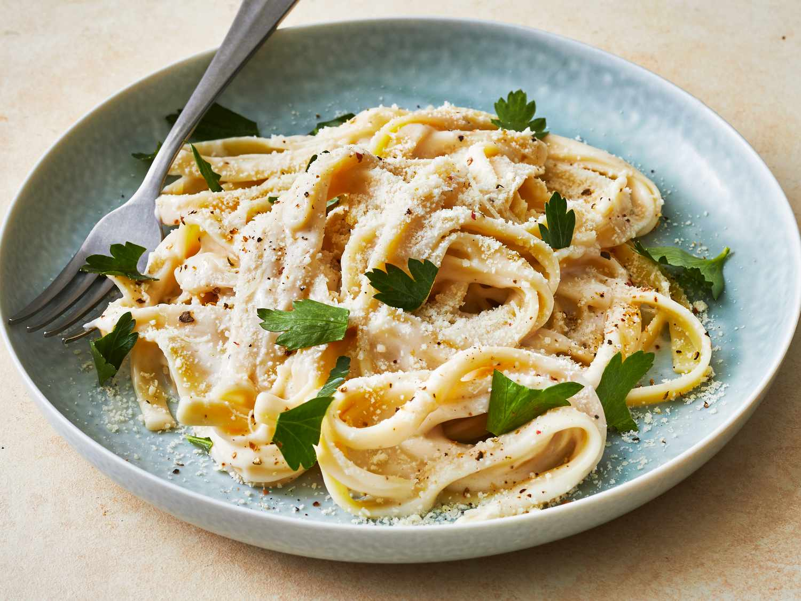

Pizza

Easy Pasta Alfredo - Creamy, comforting, absolutely delicious, and super
easy. This is the best and most simple recipe for Alfredo sauce that you
will find!
Ingredients
- 8 ounce pasta
- 4 tablespoon butter
- 2 cloves garlic
- 1 1/2 cups milk
- 41 cup heavy cream
- 1/2 cup Parmesan cheese
- 1/4 teaspoon salt
- 1/4 teaspoon pepper
- 2 tablespoon fresh parsley
Preparation
- Cook the pasta according to the package instructions.
-
Melt the butter in a large skillet over medium high heat. Add the garlic
and cook for 30 seconds, or until fragrant
-
Pour in the milk and cream. Stir consistently to avoid burning on the
bottom of the pan until the mixture comes to a boil. Turn the heat down
to medium, and mix in the parmesan cheese, salt, and pepper. Adjust the
seasoning to your own taste.
-
Remove the pan from the heat and mix in the cooked pasta until the sauce
begins to thicken. Garnish with parsley, and serve.
Tips
You can use a larger ratio of milk to cream if you'd like to cut down on
calories. You can use any type of pasta that you prefer. This can be
served with chicken or mushrooms to add some protein. Please keep in
mind that nutritional information is a rough estimate and can vary
greatly based on products used.